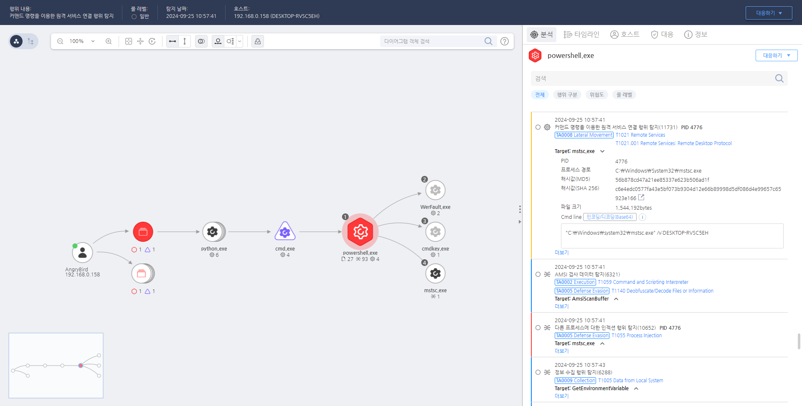

T1021.001.01 Remote Services Remote Desktop Protocol
D3FEND
MITRE ATT&CK 액션을 기준으로 대응 방안을 작성
Detection
Rule1 + Rule2
Detection(EDR)

https://172.18.10.125:8903/#/event/edr/66f36f20002dc79400000213
Response
해당 행위를 수행한 프로세스를 종료합니다.
Mitigations
RDP 접근 제한
- RDP 접근 차단: 불필요한 시스템에서 RDP를 비활성화합니다. Windows Settings나 그룹 정책을 통해 RDP 포트를 차단하거나 서비스를 비활성화하여 외부에서 RDP로 접근할 수 없도록 합니다.
- RDP 포트 변경: 기본적으로 TCP 포트 3389가 RDP의 기본 포트로 사용됩니다. 이를 다른 포트로 변경하여 자동화된 공격 도구들이 해당 포트를 찾기 어렵게 만듭니다. 그러나 포트 변경만으로는 충분한 보안이 되지 않기 때문에 추가적인 보안 조치가 필요합니다.
다단계 인증(MFA)
- MFA 적용: RDP 접속 시 다단계 인증(MFA)을 적용하여 비밀번호만으로 로그인할 수 없도록 합니다. MFA를 사용하면 비밀번호 유출이나 추측 공격을 방어할 수 있습니다.
- RDP 세션에 대한 강력한 인증 요구: 사용자의 자격 증명 정보가 유출된 경우에도 MFA가 활성화되어 있다면 RDP 세션을 차단할 수 있습니다.
RDP 세션 암호화 강화
- RDP 보안 설정 강화: TLS(Transport Layer Security)와 같은 강력한 암호화를 사용하여 RDP 세션을 암호화하고, 세션 중간에서 정보가 탈취되지 않도록 합니다.
- Network Level Authentication (NLA) 활성화: NLA를 사용하여 원격 세션을 설정하기 전에 인증을 요구합니다. 이로 인해 인증되지 않은 사용자나 악성 프로그램이 세션을 열 수 없게 됩니다.
IP 화이트리스트 및 접근 제어
- IP 화이트리스트 설정: 특정 신뢰된 IP 주소만 RDP로 접근할 수 있도록 설정하여, 외부에서의 무차별 공격을 차단합니다.
- VPN 사용: RDP 세션을 외부에서 직접 접근하지 못하도록 VPN을 통해 접근을 제한합니다. VPN을 통해 안전한 연결을 유지하고, 민감한 시스템에 대한 접근을 더 강력하게 제한할 수 있습니다.
RDP 로그인 시도 제한
- 로그인 시도 제한: 비밀번호 추측 공격을 방지하기 위해 계정 잠금 정책을 설정하여 실패한 로그인 시도 후 일정 횟수 이상 시도하면 계정을 잠그도록 합니다.
- 연속 로그인 시도 차단: Windows Group Policy에서 로그인 시도를 제한하거나 로그인 실패 횟수 제한을 설정하여 공격자가 무차별 대입 공격을 진행하는 것을 방지합니다.
RDP 세션 모니터링
- 로그 파일 모니터링: Windows Event Log 및 Sysmon과 같은 도구를 사용하여 RDP 세션 관련 로그(예: 4624 로그인 이벤트)를 실시간으로 모니터링하고, 의심스러운 로그인 시도나 비정상적인 RDP 접속을 탐지합니다.
- 침입 탐지 시스템(IDS) 사용: IDS를 설정하여 RDP 트래픽을 모니터링하고, 이상 징후를 탐지하여 경고를 발생시킵니다.
강력한 비밀번호 정책
- 강력한 비밀번호 정책 적용: RDP에 접근하는 사용자 계정에 대해 강력한 비밀번호를 요구하고, 비밀번호 복잡도 정책을 활성화하여 비밀번호가 쉽게 추측되지 않도록 합니다.
- 비밀번호 주기적 변경: 주기적으로 비밀번호를 변경하도록 요구하여 유출된 비밀번호로의 접근을 방지합니다.
RDP 접속의 제한된 시간 설정
- 접속 시간 제한: 원격 데스크탑 접속을 특정 시간 동안만 허용하여, 불필요한 시간 동안 원격 접속을 차단하고 보안을 강화합니다.
RDP 소프트웨어 업데이트
- 정기적인 보안 패치 적용: RDP 서비스에 관련된 취약점이 악용될 수 있기 때문에, 관련 소프트웨어 및 운영 체제에 대한 보안 패치를 즉시 적용하여 알려진 취약점이 악용되지 않도록 합니다.
시스템 내부에서 RDP 제한
- 그룹 정책 설정: 시스템 내에서 RDP 접속을 원치 않는 시스템에서 이를 제한하거나 비활성화할 수 있도록 그룹 정책을 설정합니다.
Affected Techniques
Action 실행시 함꼐 영향을 받는 다른 Techniqes
| D3FEND |
| D3-NTA Network Traffic Analysis |
| D3-PLA Process Lineage Analysis |
| D3-PM Platform Monitoring |